AI Product Lead as a Service ↗ · An independent concept, not affiliated with Asana.
AI product teardown: Asana and the operating system for work
Last week, I wrote about six things that AI-native products need to get right. Some of it can feel abstract, so I thought I’d take a couple of examples and make it more concrete.
Today, let’s look at work and task management, using Asana.
Asana is already moving toward a world where people and agents get work done together. They call it an “operating system for human-agent teams.” [1]
But changing an existing product is hard. People already use it in a certain way. Teams have built their processes around it. You have to bring them along.
For this exercise, let’s put those migration constraints aside. If we were building Asana from scratch today, with agents as part of the experience from day one, what would it look like?
The screens below are my concepts, using fictional project data. They are not screenshots of released Asana features. I’ve also called out capabilities that Asana already supports.
A few basic truths about how work happens
People don’t do all their work inside Asana. They make decisions in meetings, discuss changes over email, design in Figma, and build in tools like Claude Code or Codex.
Asana is where that work gets organized. But its picture of the project depends on what makes it back into the system. If a decision changes in a meeting and nobody updates the task, the plan and the actual work drift apart.
If we want agents to help get the work done, they need that context too. I would bring Asana into relevant meetings and email threads, and connect it to the documents, designs, and development work—with the access the team chooses to give it.
Otherwise, someone still has to finish the conversation, open Asana, and type everything in before the agent can help.
Project management software is in the information business. The more naturally and seamlessly it gets that information, the more effective and proactive it can be.
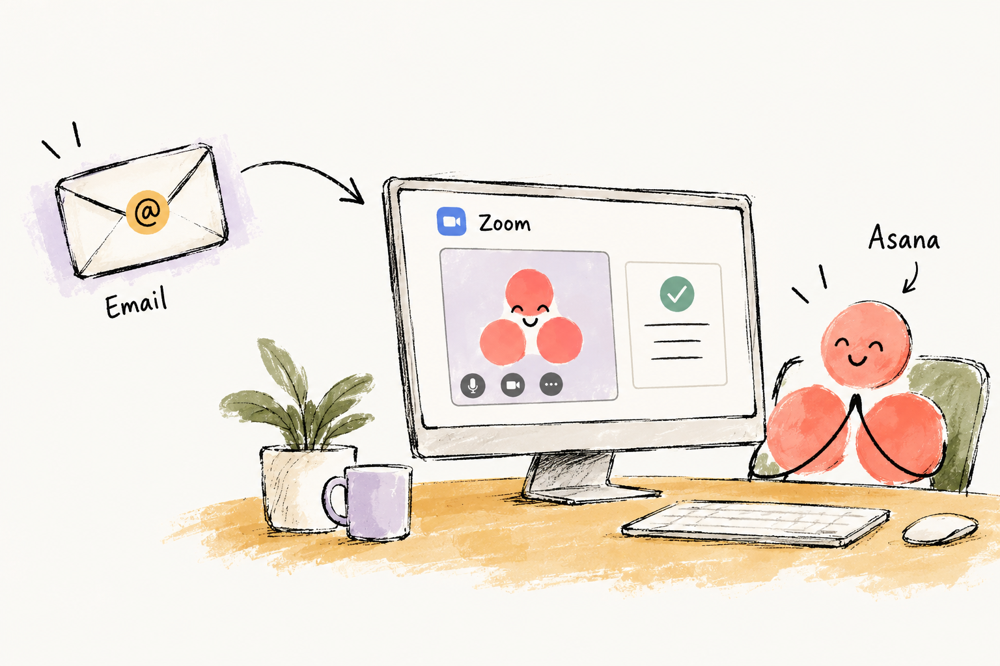
Now let’s get down to the specific principles and what they could look like in Asana.
1 + 2. Meet people where they work, and bring the experience with you
The first point is the simplest: MCP. If I’m already working in Claude Code, Codex, or another assistant, let me use Asana from there. Find the work, inspect it, update it, and move on.
Asana already supports this. Its MCP tools can read and update work, and it also documents interactive previews for some actions in Claude and ChatGPT. [2]
I would build on that. Let me ask, “What needs my attention on the portal project?” and bring up a useful project view beside the conversation. Show the deadlines, the risk, and the decision I need to make. Let me act from there.
Some people will want the raw data and the freedom to build their own views. Others will want a familiar, structured interface. We don’t know how that split will settle. I would solve for both.
That’s why I’m combining the first two principles here: access through your assistant, with a good visual experience when you need one.
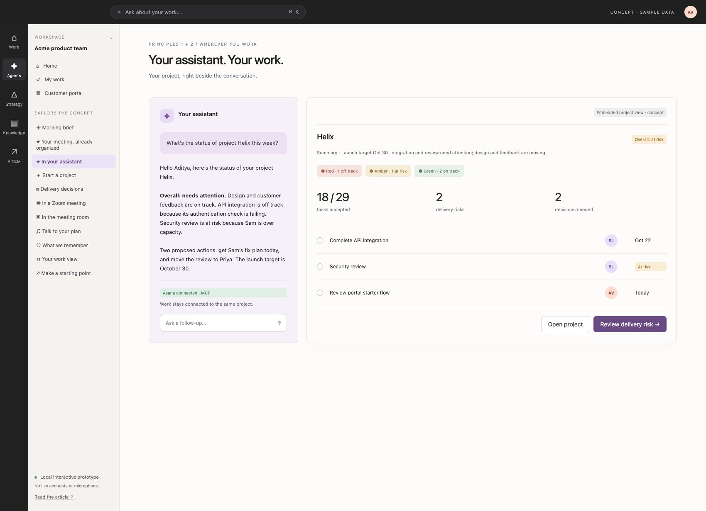
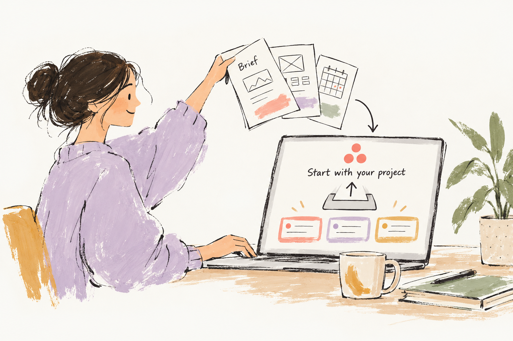
3. Adapt the interface to the person and the work
The interface should change based on who I am and what I need to do. We’ll come back to this after the next few principles, because it depends on what the product understands about the work.
4. Bring the project expertise into the product
Asana knows a lot about managing projects. So why should I have to start by knowing exactly how I want to configure one?
Let me say, “We’re building a customer portal. Here’s the brief. We have four weeks.”
Then give me a starting plan. Perhaps a Kanban board, because design and development will move in parallel. Add a timeline for the launch and a checkpoint for security. Explain why that approach fits. Prefill the first tasks, and let me change it.
The recommendation is useful because it has a reason. I can still choose a list or a different process.
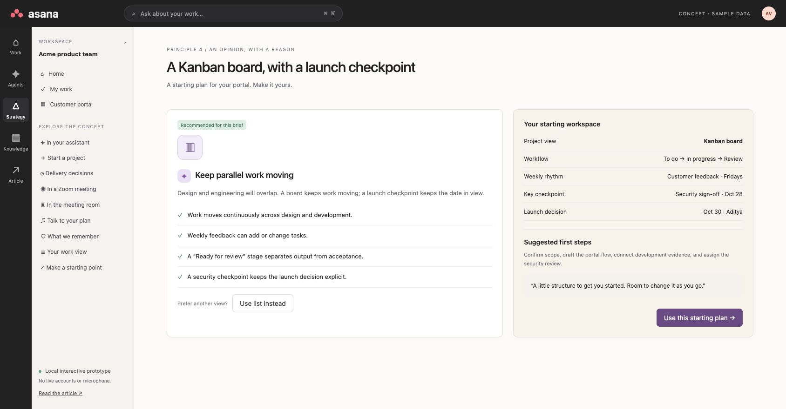
The same expertise should show up while the project is running. If someone is overloaded, flag the risk and help me deal with it. Which dependency is affected? Could somebody else take the review? What happens if we move the date?
“Sam is overloaded” is a warning. “Moving this review to Priya would protect the launch date, and here’s why” helps me make a decision.
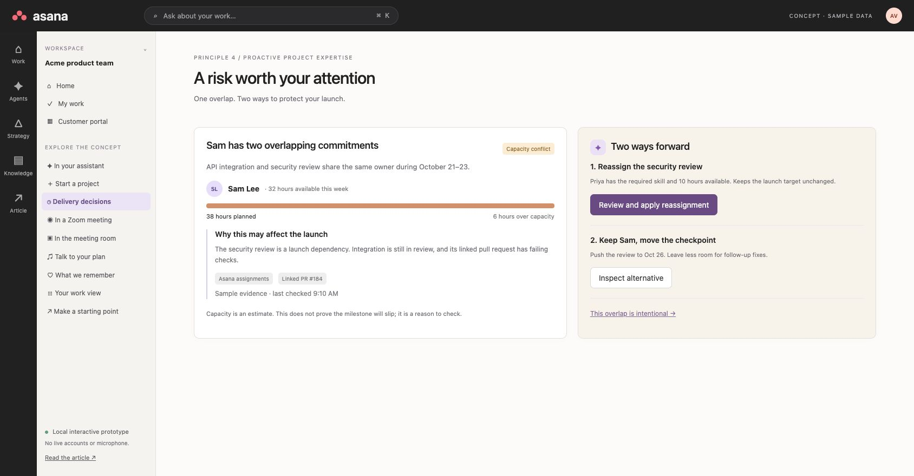
5. Voice, wherever the work happens
Project management is a fantastic use case for real-time voice.
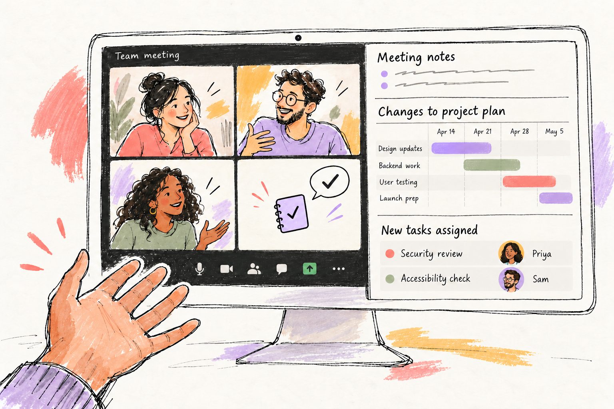
In a Zoom meeting, I should be able to say, “Move the review to Priya, keep the launch date, and flag anything that puts it at risk.” Asana prepares the changes, and we check them while we’re still talking.
In a physical meeting room, put the project on the screen. Let us ask, “Are we still on for Friday?” and see what supports that answer. Bring up the dependency, the missing review, or the decision we need to make.
And when I’m working alone, let me talk through the plan. I’m talking on the left, and the Gantt chart on the right updates as we go. I say, “Add an accessibility check before security review,” and see the proposed change appear.
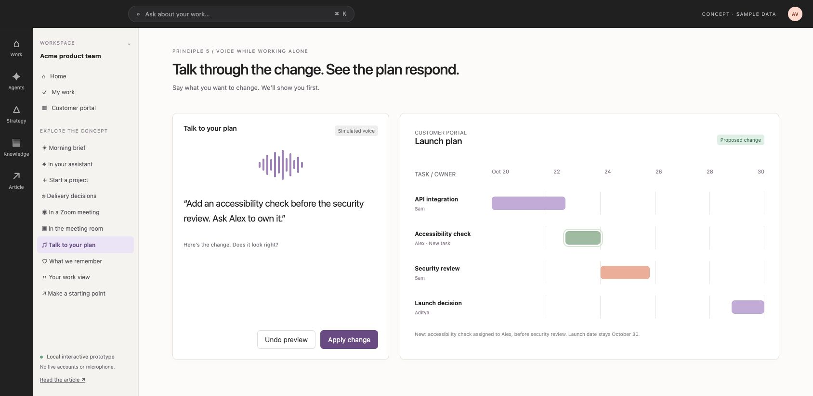
The technology for live meeting participation exists. Recall.ai documents bots that can join meetings, receive real-time media, and speak back. Composio has a Zoom toolkit for meeting and recording actions, but I wouldn’t describe that alone as a live voice participant. [3][4]
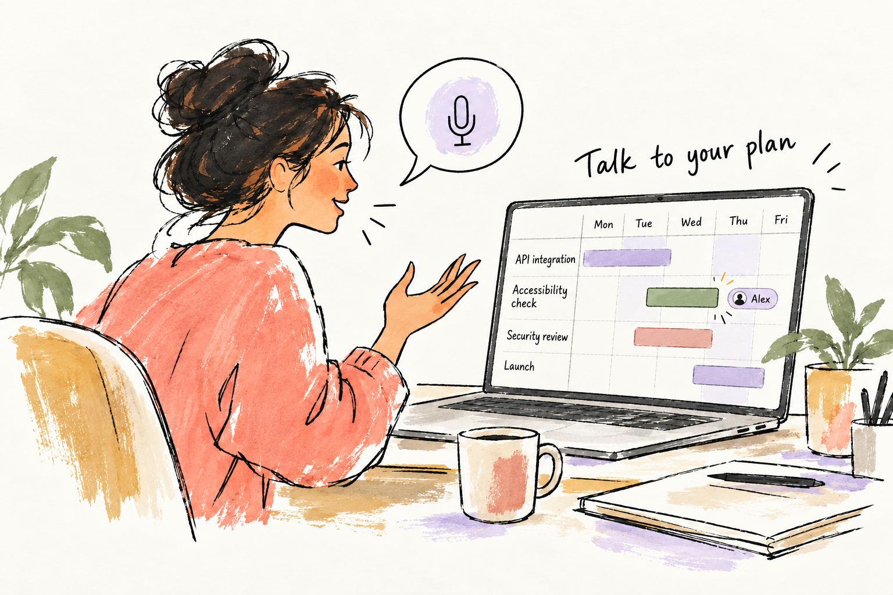
6. Learn from the exceptions
Sometimes I will override the recommendation. I’ll choose a list instead of Kanban. Or I’ll explain that Sam’s overlapping assignments are intentional because he is pairing with somebody else.
That explanation should count for something. Remember it in the right scope. If it applies to this project for this week, don’t turn it into a rule for every project forever.
The next warning should reflect what I’ve already explained. And the product should check whether the adjustment actually helped.
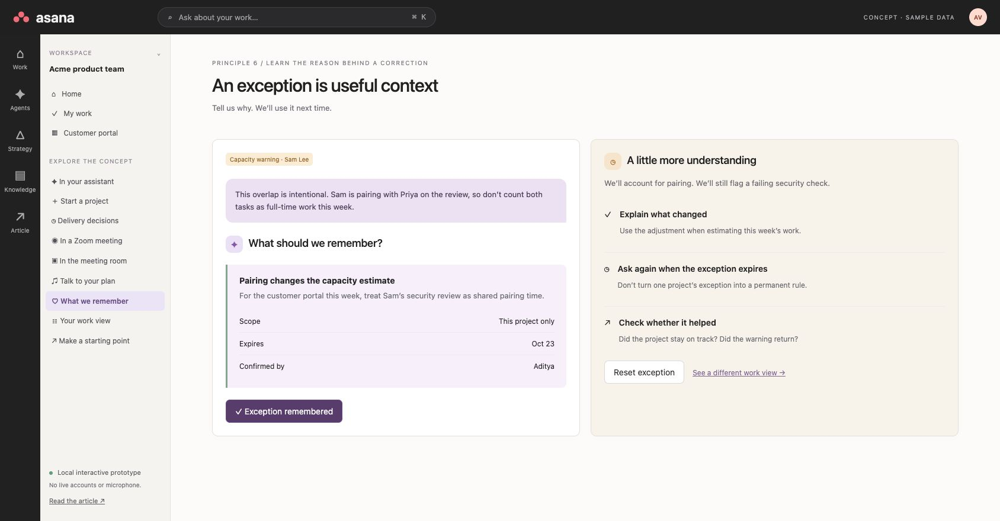
Back to 3. Let the interface follow the person and the work
If I’m the project manager, I care about schedules, delivery, dependencies, and decisions. Give me that view.
If I’m the developer, show me what I need to finish. “This is due in two days. The linked pull request still has failing checks. Here’s the blocker, and here’s who needs an update.”
Use the evidence from Git and other connected sources too. An open pull request tells us something different from a merged one. Neither automatically proves that the task meets its acceptance criteria.
The view can change, but we should still be looking at the same work. And I should always be able to get back to the full plan.
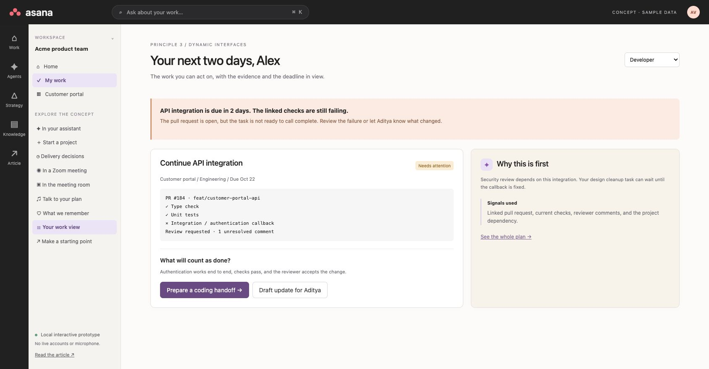
Start the day with what matters
The biggest job of task management software is telling people where things stand, based on what they care most about.
A morning brief is a simple way to do that. What’s going well? What needs attention? And what should I do next?
For a project manager, be specific. API integration is off track because the authentication check is failing. Security review is at risk because Sam is overloaded. The design and customer feedback session are on track. Then give me two recommendations: get Sam’s fix plan today, and move the security review to Priya. For a developer, bring the failing check and the next task to the front. Same project, different priorities.
Then help me follow through. “Ask Sam for his fix plan.” “Review the reassignment to Priya.” “Prepare an update for the launch board.” Bring the relevant context into the draft so I don’t have to assemble it again.
The morning brief is a starting point. If something important changes during the day, bring it back to me when it matters. Don’t wait for me to open a dashboard and find it.
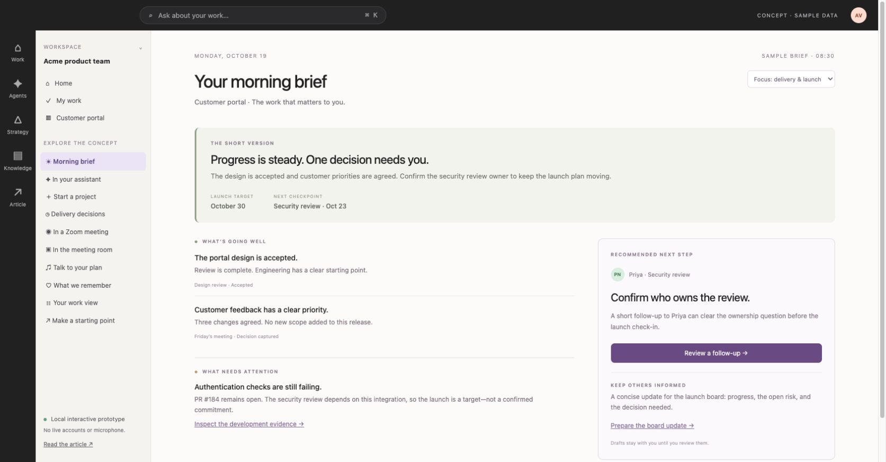
Where the delight comes from
I want a moment where I open the product and think, “Oh, you’ve already done that for me.”
Imagine coming back after a meeting. Asana says, “I turned that conversation into a plan.” The accessibility check is there. Alex is assigned. Priya has the review. The launch date is still where we wanted it.
Let me tap a line from the conversation and see exactly where it landed in the plan. Show me the before and after. I can keep the changes or adjust them. I don’t have to organize the meeting all over again.
There are smaller moments too. It remembers why I deliberately gave someone overlapping work. It brings back the document I was about to look for. It has the follow-up ready with the right context.
The surprise comes from how well it understands the work. The relief comes from realizing there is one less thing for me to do.
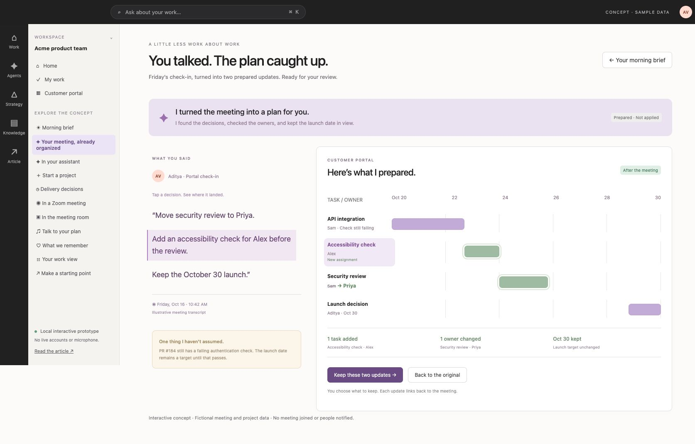
Do we need a cast of agents?
I’m less convinced that users need to choose a project manager agent, a designer agent, and a coordinator agent before they can get anything done.
Are we recreating the complexity of an organization inside the product?
I would rather tell one assistant what I’m trying to achieve and let it bring in the right capabilities. Show me what it is doing, what it needs from me, and who is accountable. Give me more control when I want it.
Get some of the work done, too
There is another opportunity here. Asana can help produce the work it is asking people to manage.
Suppose I give it a brief and ten approved design references. Could it draft a starting flow? Turn a conversation into a requirements document? Prepare an implementation plan?
Some people will want to take that into Figma. Others will want to work in Claude Code or Codex. Give them a useful base and a clean handoff.
Starting a scoped coding session from the project could be powerful: here’s the requirement, here’s the context, here’s what done means. Let me review the scope and approve the access before it starts.
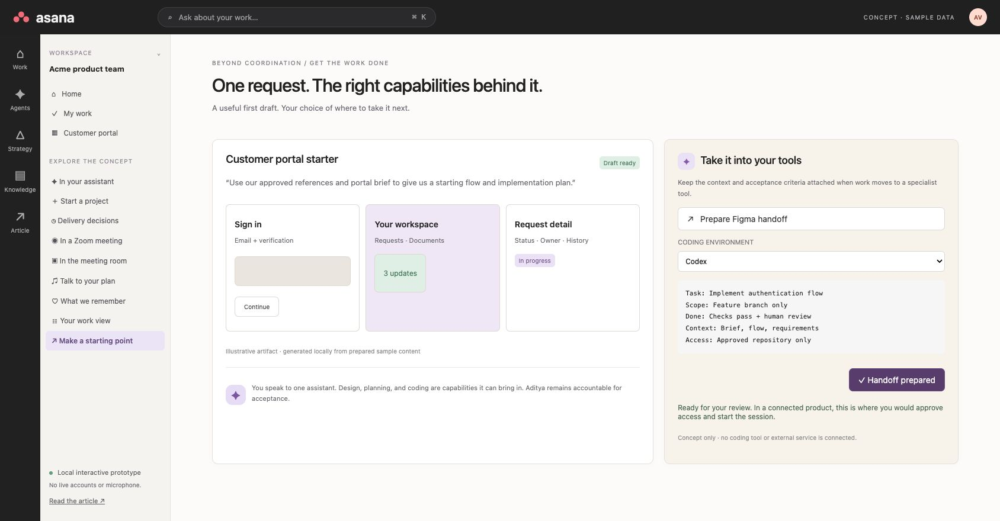
That’s the Asana I’d want to explore. It understands the project, helps move it forward, and brings me in where I’m needed. I can use it through my assistant, talk to it in a meeting, or open the full interface when I want more control.
Same work. Different ways to get it done.
Sources
[1] Asana: Operating System for Human-Agent Teams — https://investors.asana.com/news-releases/news-release-details/asana-unveils-operating-system-human-agent-teams
[2] Asana MCP tools reference — https://developers.asana.com/docs/mcp-tools-reference
[3] Recall.ai bot overview — https://docs.recall.ai/docs/bot-overview
[4] Composio Zoom toolkit — https://docs.composio.dev/toolkits/zoom
Previous article: https://decisionaxis.substack.com/p/six-principles-for-building-ai-products